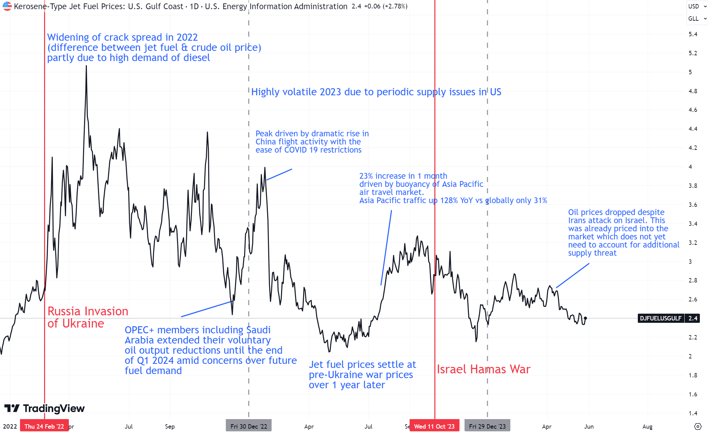

4th June 2024
This report provides a brief analysis of the jet fuel market, its importance to airlines, the need for fuel hedging, historical price trends, SAFs, and recent news affecting markets.
Jet Fuel comprises over 40% of airline operating costs, and hence volatility can have significant impacts on their financial performance. Airlines must strategically acquire fuel and hedge risk when necessary.
Airlines had varying strategies - Ryanair hedged 80% of their expected 2022 fuel requirement, Lufthansa 65% and British Airways 60%. Wizz air however did not hedge at all. When oil prices surged, Wizz air shares dropped 50% as a result. Ryanair continued to hedge fuel into 2023, at 85%, and this saved the company $1.4 billion in the fiscal year.
Hedging stabilises revenues and ticket prices for consumers. It is done via the purchasing and selling of derivatives such as put and call options, forward contracts, and swap contracts. For forward contracts, a price is locked in for a specified future date, If the price of fuel at maturity is higher than in the contract, the airline has saved money by hedging.
Jet fuel is produced from the distillation of crude oil, with the U.S. being the largest producers at a rate of 1500 barrels/day. The chart below shows jet fuel prices since early 2022 with the key causes of movement labelled.
Trading view: ticker DJFUELUSGULF
Joe Biden pledged for the US to produce 3bn gallons of SAFs per year by 2030, whilst they currently produce around 16mn gallons. SAFs are 1.5 - 1.6 x more expensive than jet fuel and with airlines running tight margins, they are not yet a 'complete' alternative. It is expected that it will take until 2037 for them to have equal costs, due to CO2 emissions fees.
In April 2024, global flight activity exceeded pre-pandemic levels for the first time. Jet fuel demand has not kept up though due to more fuel efficient aircaft. Jet fuel has contributed almost half of the increase in oil demand, driving up prices.